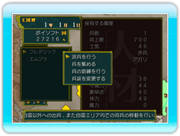

19 |
軍事 |
 |
自国の領土拡大のための戦争、戦争の準備のために、軍事に関する命令を出します。また、軍部に配置された部下が実行する仕事です。 王様の命令できるコマンドは、以下のようなものがあります。また、コマンドを選択し、その命令を誰 に実行させるのかを決定する必要があります。王直属の部署に人がいない場合は、王様が直接命令を出 すことができません。  ◆派兵を行う あなたのエリア内での部隊の移動、または他国への出兵を行います。ただし、あなたのエリアと隣接するエリアにしか出兵はできません。 ◆兵を集める 徴兵して兵士を増やします。 ◆兵の訓練を行う 戦争で有利になるように兵士の訓練をします。 ◆兵装を変更する 部隊の装備を変更します。 歩兵、弓兵、騎兵などから選択できます。 |
 |
 |
 |